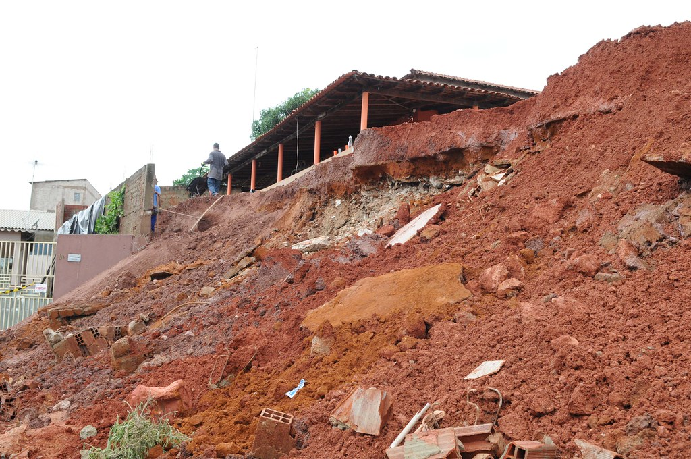

Áreas de risco são regiões passíveis de serem atingidas por processos naturais e/ou induzidos que causem efeito adverso. As pessoas que habitam essas áreas estão sujeitas a danos à integridade física, perdas materiais e patrimoniais. Normalmente, essas áreas correspondem a núcleos habitacionais de baixa renda (assentamentos precários).

Em termos conceituais, a condição de risco une dois elementos: a suscetibilidade e a vulnerabilidade, potencializados pela probabilidade dos eventos climáticos.
Exemplo: "Determinada população está em condição de risco quando ocupa um terreno suscetível a desastres e de modo frágil, conforme o padrão construtivo das edificações, tornando-se, assim, vulnerável."
R = P * C
S = P
Graus de Risco |
Descrição |
R1Baixo |
Não há indicios de desenvolvimento de processos destrutivos em encostas e margens de drenagens. Mantidas as condições existentes, não se espera a ocorrência de eventos destrutivos. |
R2Médio |
Observa-se a presença de alguma(s) evidência(s) de instabilidade (encostas e margens de drenagens) porém incipiente(s). Mantidas as condições existentes, é reduzida a possibilidade de ocorrência de eventos destrutivos durante episódios de chuvas intensas e prolongadas |
R3Alto |
Observa-se a presença de significativa(s) evidência(s) de instabilidade (trincas no solo, degraus de abatimento em taludes etc). Mantidas as condições existentes, e perfeitamente possível a ocorrência de eventos destrutivos durante episódios de chuvas intensas e prolongadas |
R4Muito Alto |
As evidências de instabilidade (trincas no solo, degraus de abatimento em taludes, trincas em moradias ou em muros de contenção, árvores ou postes inclinados. cicatrizes de escorregamento, feições erosivas, proximidade da moradia em relação ao córrego etc.) são expressivas e estão presentes em grande número e/ou magnitude Mantidas as condições existentes, é muito provável a ocorrência de eventos destrutivos durante episódios de chuvas intensas e prolongadas |